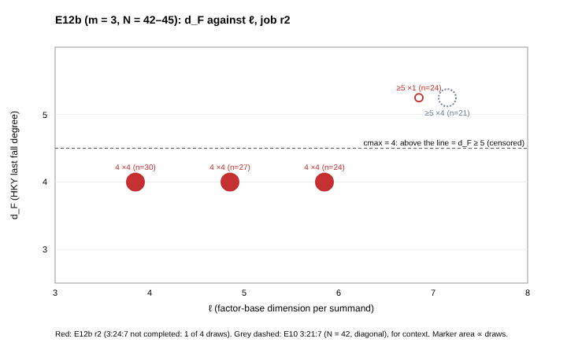

Outcome: inconclusive. Three of four cells completed. The fourth (3:24:7) was cut off by a Spot reclaim after one draw. The one relaunch Amendment 11 allows is now used, so no registered reading is recorded.
What ran. Amendment 11 (E12b) of research/fall_degree_bounds_20261008/PREREGISTRATION.md, registered before any E12 draw.
Engine examples/hky_par.rs at source commit 371035216942, built on the instance from the S3 archive
fd-src-371035216942.tgz (sha256 4ae808ac…). Launch card e12/launch3.card.yaml (receipt e12/launch_receipt3/).
Job 20261027-181036-fd-e12b-ell-20261027-r2-409f97: ephemeral Spot m7i.4xlarge (16 vCPU, 61 GB), us-east-1c, lab account.
Draw rule: ladder_sample with seed 20261012, the first 4 draws with no solutions, cmax = 4.
No isolation level was earned, so wall times are indications only and are not scored.
Gates, all passed on this instance's binary. 0: the three counter tests pass. 1: e7/validate.sh passes.
2–3: newcells reproduces e6/B_5-10-2.rerun, e6/B_3-18-6, e8/E8_4-8-2 and e8/E8_5-8-2 (empty diffs).
Lean: lake build of FallDegree passed (out/lean/status: exit=0).
Interruption. The command exited 143 at 19:06:09 UTC while running 3:24:7 draw 1. The runner logged “interrupted (spot reclaim)”.
r1 (e12/run-b1) had stopped at the same point.

Recorded d_F of the 13 r2 draws (red) against ℓ, with the four committed E10 draws of 3:21:7 (ℓ = 7, N = 42, on the diagonal) in grey for context.
A hollow “≥5” marker is a draw whose degree-4 closure stopped without reaching 1. Source: plot_e12b.py.
| cell m:n:ℓ | N | status | d_F per draw | closure dim / columns at degrees 2, 3, 4 | s per draw (16 threads) |
|---|---|---|---|---|---|
| 3:30:4 | 42 | completed | 4, 4, 4, 4 | 71/904; 3,197/12,384; 124,314/124,314 | 184–234 |
| 3:27:5 | 42 | completed | 4, 4, 4, 4 | 68/904; 2,912/12,384; 124,314/124,314 | 160–167 |
| 3:24:6 | 42 | completed | 4, 4, 4, 4 | 65/904; 2,628/12,384; 124,314/124,314 | 131–137 |
| 3:24:7 | 45 | not completed (1 of 4) | ≥5 | 68/1,036; 2,842/15,226; 157,926/164,221 | 298 |
Reproduction. r2 equals r1 on every non-timing field for all 13 draws: d_F, per-degree dimensions and rounds, v_basis, x_r and solution counts.
Raw records: e12/run-b2/out/E_*.jsonl, with gate, build and Lean logs and host.txt beside them.
Unregistered observation, not a reading. At fixed N = 42, the degree-4 closure reaches the full space (124,314 columns) at ℓ = 4, 5 and 6. The single ℓ = 7 draw (N = 45) stops 6,295 columns short, as the diagonal cell 3:21:7 does. Toy size only; no exponent and no security claim.